※こちらの記事はＡＩ（Chat GPT 5.2 Thinking）で作成したものを一部加筆しています😆
2025.2に食べました😄 宜野湾市大山で沖縄そば巡りしてきました🍜 今回お邪魔したのは「沖縄そば食堂 よねはま」さんですね。
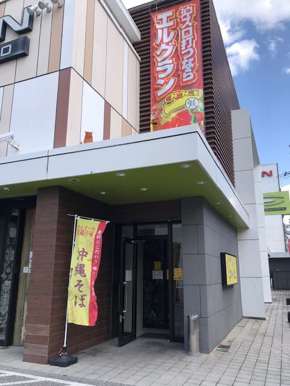
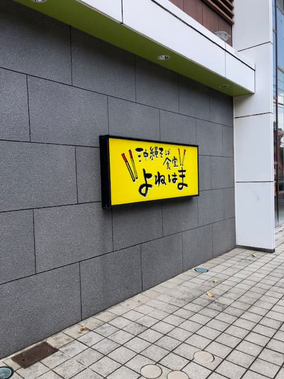
外観からして“食堂”感がしっかりあって、しかもパチンコ屋に併設されてる立地なんですけど、これが名護の「我流そば」さんをちょっと思い出す感じなんですよね〜😊

入口には黄色い看板が目立ってて、初見でも迷いにくいのがありがたいですね。店に入るとまず食券機スタイルで、ボタンの数が多くて「え、メニュー多っ！」ってなります😂 そばだけでも種類がいろいろあるし、焼きそばとかカレー系、丼や定食っぽいのまであって豊富です。
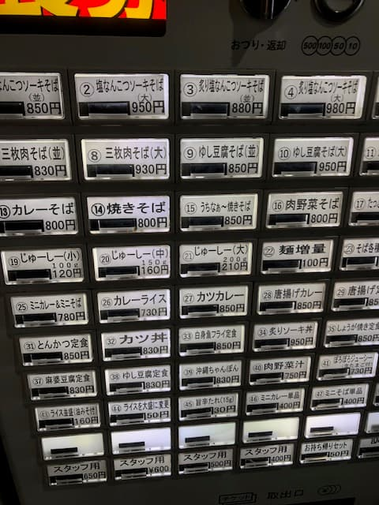
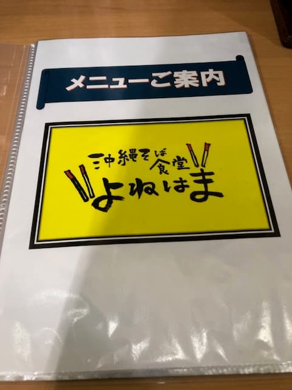
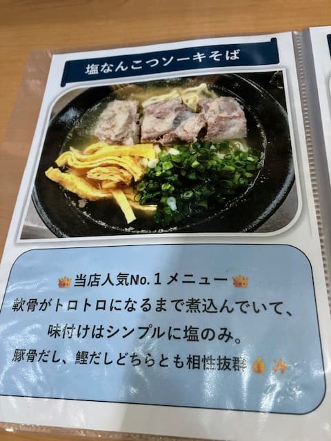
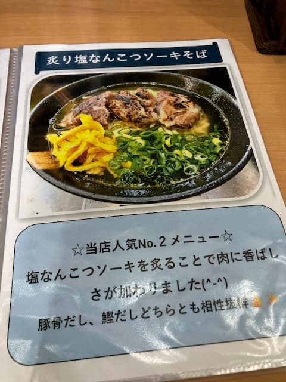
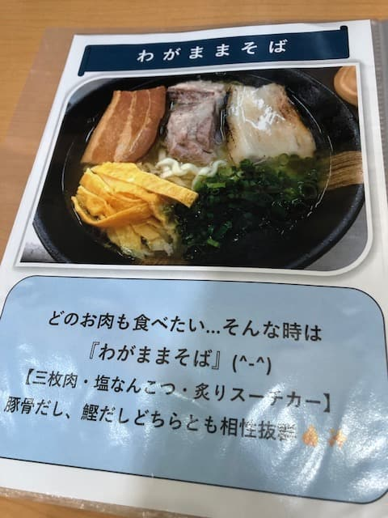
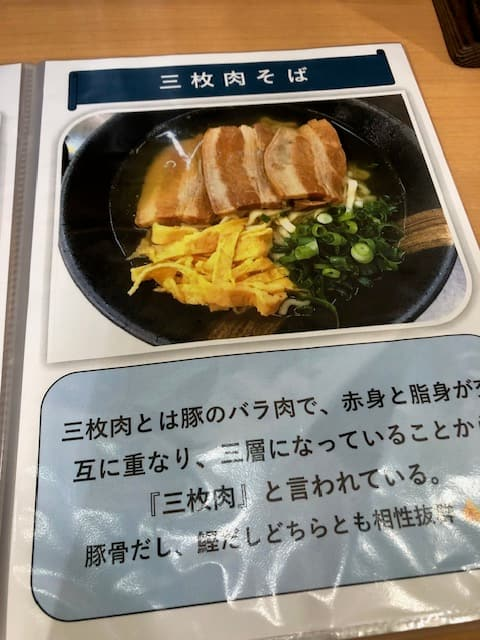
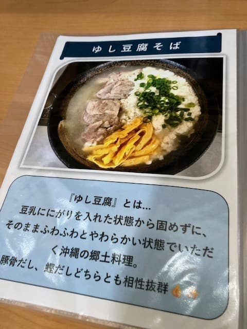
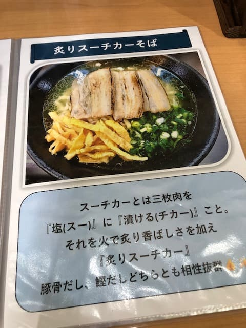
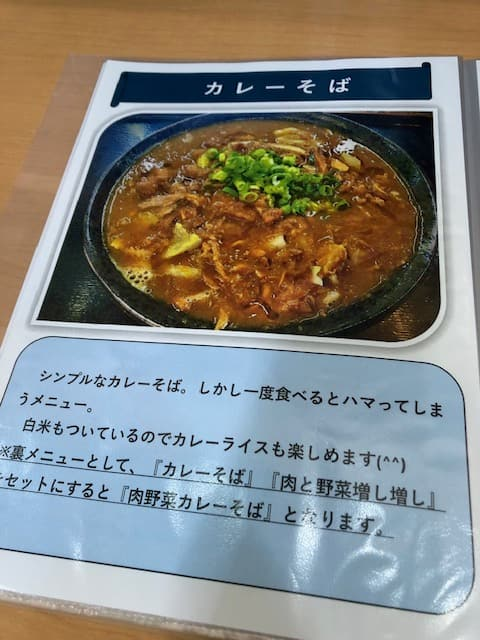
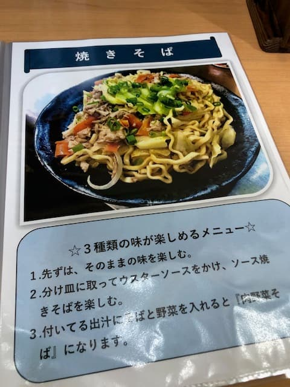
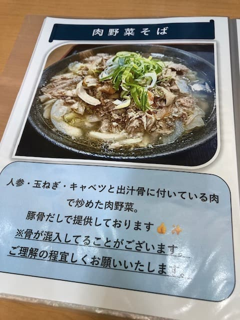
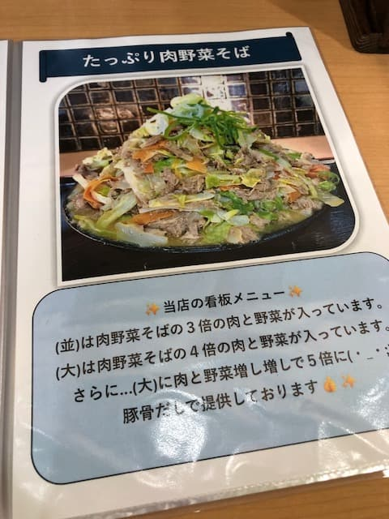
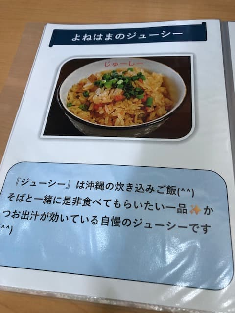
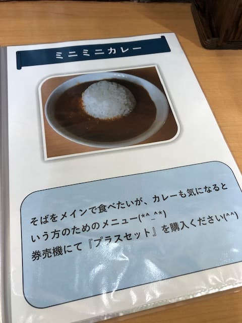
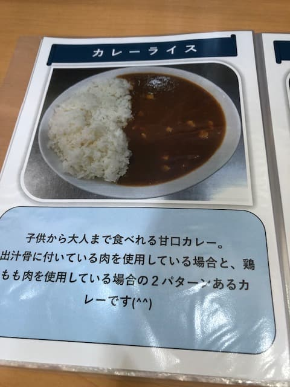
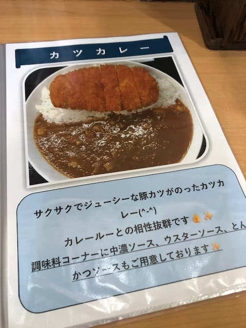
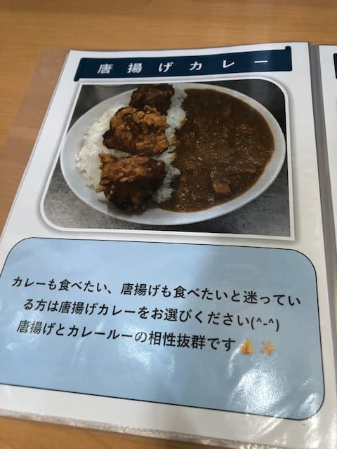
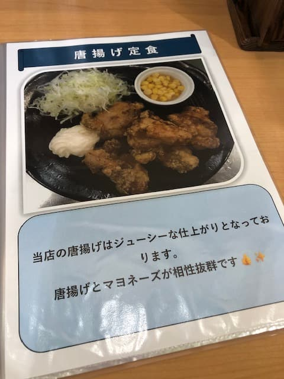
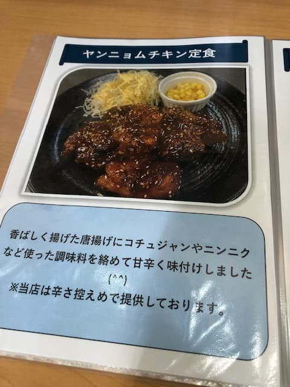
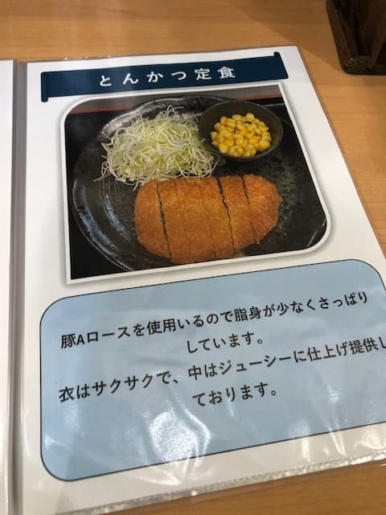
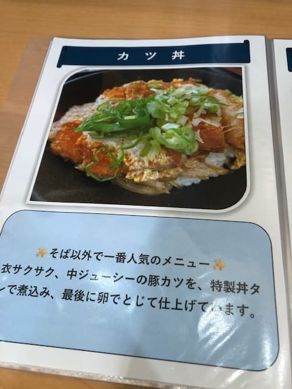
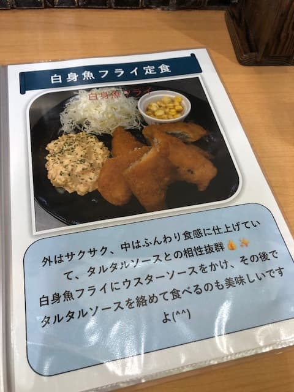
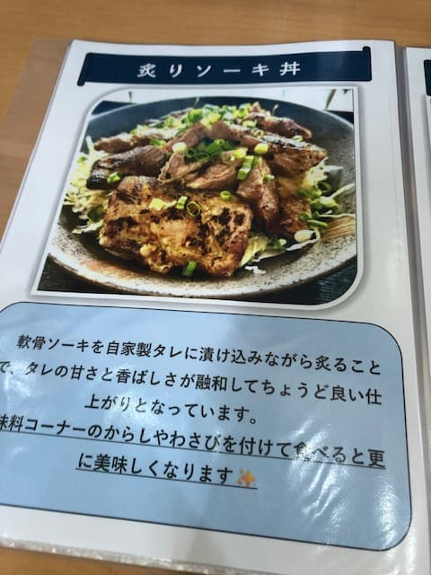
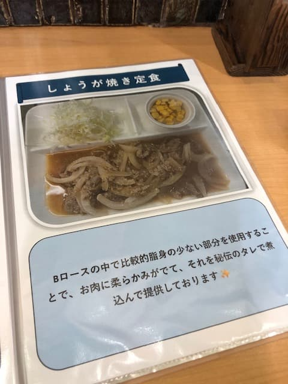
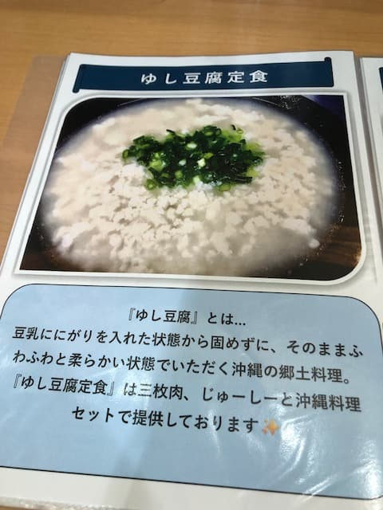
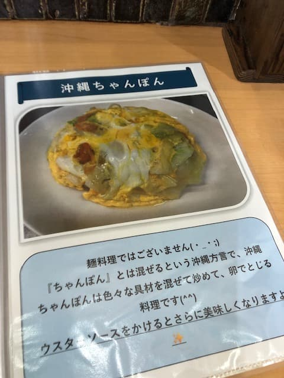
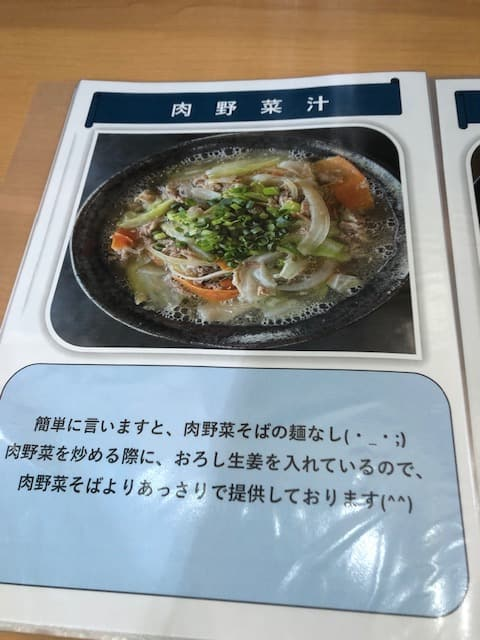
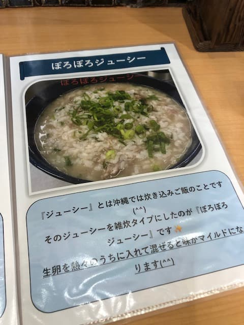
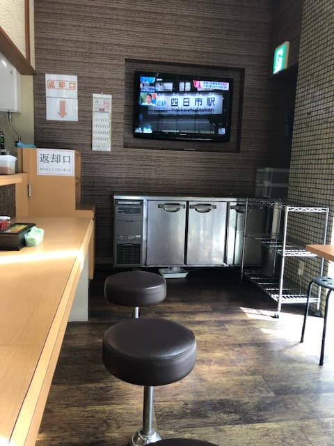
たくさんのメニューの中から人気Ｎｏ．１と紹介されていた「塩なんこつソーキそば」をポチッとしました。
ここでおもしろいのが、スープが“鰹出汁”と“豚骨出汁”から選べるところなんですよね。自分はいつもの流れで鰹出汁を選択しました。
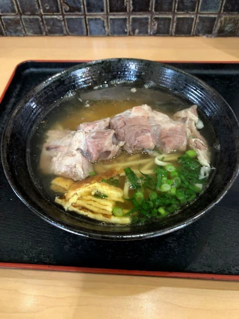
まずはスープを一口。いつもの鰹出汁を想像しながらスープを飲んだ瞬間、「あ、これ思ってた鰹100％じゃないな」ってなりましたね。鰹の風味はちゃんとあるんだけど、思ったより“合わせ出汁”が強めで、豚骨出汁も感じるスープかなと思いました。
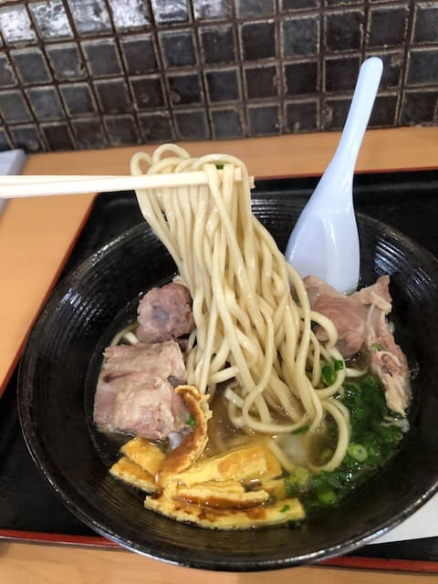
麺はストレートタイプの細麺で、食感はけっこう柔らかめですね。
そして主役の軟骨ソーキ。でかいゴロッとしたのが乗っててテンション上がるんですけど、味付けはあっさり系ですね。
店内の雰囲気も、気取らない食堂って感じで入りやすいです。お客さんの回転もそれなりにあって、ふと周りを見たら、みんな豚骨出汁を頼んでるんですよね…！これがちょっと気になりました😂 もしかして本命は豚骨出汁の方なんかなー？って素直に思っちゃいました。鰹を選んでも豚骨の気配を感じたくらいなので、豚骨選んだらもっと“推し”が分かりやすいのかもしれないですね。次行くなら豚骨で別メニュー攻めたくなるやつです。
評価（9点/15点）：正直な本音としては、今回の鰹出汁の塩なんこつソーキそばは「めちゃくちゃ刺さる！」っていうより「普通にうまい、沖縄そば」でしたね😊 パチンコ併設って聞くと身構える人もいるかもだけど、サクッと入りやすいですね〜。次はみんなが頼んでた豚骨出汁、試してみたいです🍜✨
麺 ：★★★☆☆（3）
スープ：★★★☆☆（3）
具 ：★★★☆☆（3）